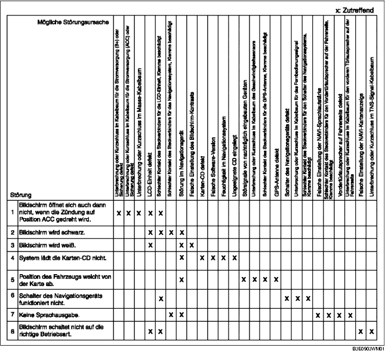

NAVIGATIONSSYSTEM
B3E090366000W01
Fehlersuchindex
• Anhand der Störungssymptome in der nachstehenden Tabelle die betreffenden Bereiche überprüfen.
Nr.
Störungssymptom
1
Bildschirm öffnet sich auch dann nicht, wenn die Zündung auf Position ACC gedreht wird.
2
Bildschirm wird schwarz.
3
Bildschirm wird weiß.
4
System lädt die Karten-CD nicht.
5
Position des Fahrzeugs weicht von der Karte ab.
6
Schalter des Navigationsgeräts funktioniert nicht.
7
Keine Sprachausgabe
8
Bildschirm schaltet nicht auf die richtige Betriebsart.
(Scheinwerfer und Kombirücklichter funktionieren.)
Schnelldiagnose-Tabelle
